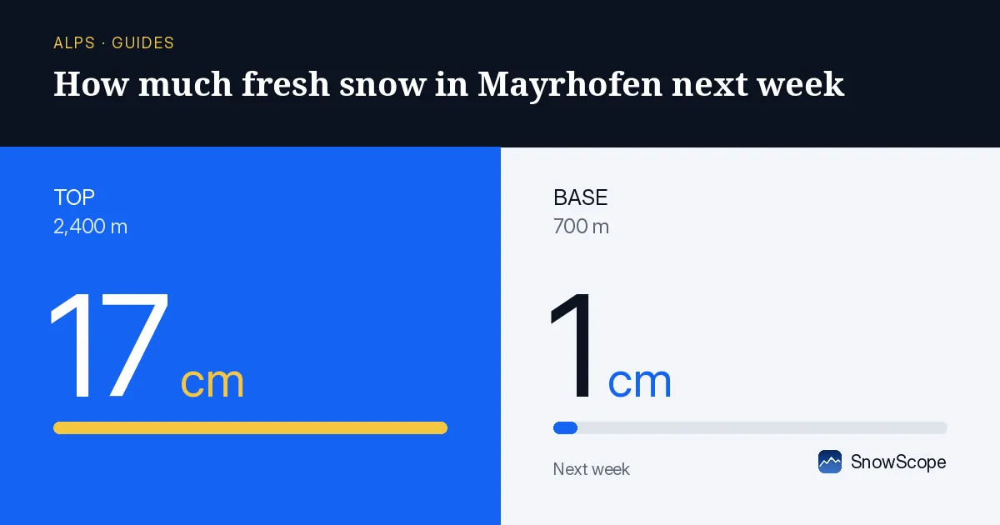
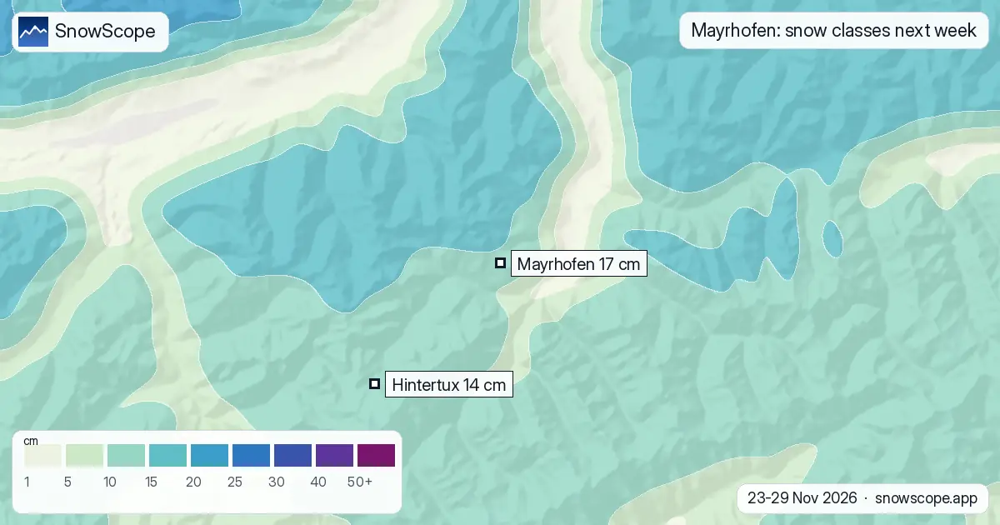

How much fresh snow in Mayrhofen next week: 2–31 cm at the top (23–29 November)
Next week from 23 to 29 November, Mayrhofen's upper mountain around 2400 m will collect 17 cm of snow across a wide range of 2–31 cm. Sunday 29 November stands out as the week's heaviest snow day, bringing 5 cm at the median and up to 10 cm in the best-case forecast.
See the live snow forecast for Mayrhofen in the SnowScope appSnow depth, powder alerts and the 3D map, free.
Breaking down the week day by day
The snow does not fall evenly. Monday 23 November starts with 3 cm at the top (possibly 5 cm), Wednesday 25 adds 2 cm (up to 5), Friday 27 gives 4 cm (reaching 6 cm), and Sunday 29 delivers the heaviest hit at 5 cm, with the best-case scenario around 10 cm. The other days see only light flurries.
Mid-mountain around 1500 m follows a similar pattern but with less: the week totals 14 cm there (2–25 cm range). The base near 700 m gets almost no accumulation—just 1 cm for the week (0–2 cm), and much of that may fall as rain.

Which height saves you from the rain line
Mayrhofen sits in a low valley, and that matters. The base elevation makes it vulnerable to rain during warm spells or at the edge of snow systems. With only 1 cm forecast at 700 m against 17 cm at the top, the lower pistes will hover near or below the snow line for most of the week.
This is why height is your friend. Head to the Penken and the Ahorn, especially their shaded sides, where altitude keeps snow cold and dry. The Hintertux glacier further up the valley offers even better protection from the thaw line.
Sunday 29 November: the week's decision point
If you can only ski one day next week, make it Sunday 29 November. The forecast range widens here—from 0 cm in the pessimistic case to 11.8 cm in the optimistic one—but the central estimate is 5.9 cm at the top, enough to refresh the pistes without false hopes of a powder day.
Before that day arrives, check the forecast again on Wednesday or Thursday. The first four days of the week (23–26 November) will give you a clearer picture of whether the system tracks closer to what the lower or upper forecasts suggest.
How neighbours stack up
The surrounding resorts tell a similar story. Hintertux, 13 km up the valley, is forecast to get 14 cm at the top next week (2–31 cm), slightly less than Mayrhofen's 17 cm. Kitzbühel, 52 km away, edges ahead with 18 cm (4–12 cm), and Stubai Glacier, 54 km away, also gets 14 cm. The differences are small—within the margin of uncertainty.
Your choice should rest on terrain, not snow volume alone. The Penken's shaded terrain and glacier access give Mayrhofen its edge if you are willing to climb or take the cable car.
The snow foundation you are building on
Before next week arrives, Mayrhofen already has a thin base from earlier in the season. From 17 to 20 November, the resort is forecast to receive only 8 cm at the top (4–12 cm range), roughly half what will fall in the following week. That means the week of 23–29 November carries most of the fortnight's snow potential.
Even so, early November snow is fragile. Early-season cover is thinner than midwinter depths, and rocks may still break through on steep, heavily skied slopes. Stick to groomed runs or consult the avalanche bulletin before venturing off-piste.
Uncertainty is built in
The 2–31 cm range at the top reflects real uncertainty. Some forecast versions show a substantial snow event; others show almost nothing. The range tightens as the week approaches, so check again on Tuesday or Wednesday before making travel plans.
Days closest to the forecast date (17 November) are most reliable. By the time you reach Sunday 29 November, confidence drops. That is normal for a 13-day outlook and no reason to give up hope—just reason to stay flexible and monitor updates.
Tips for skiers
- Ski high: aim for the Penken and Ahorn shaded sides and the Hintertux glacier. Snow depth and cold are both on your side above 2000 m.
- If 29 November is not possible, Monday 23 or Wednesday 25 also bring meaningful snow; Friday 27 is your last shot before a quieter weekend.
- Avoid lower runs and the village slopes until after Sunday 29 November. The base layer is too thin (1 cm forecast), and rain risk is high at 700 m.
- Before leaving marked pistes, check the regional avalanche bulletin of Tirol province—especially after heavy snow days.
- Pack wet-weather layers for the village even if you spend most time above 2000 m. The valley weather is damp and mild early in the season.
About these numbers
Resort snow depths are the deepest snow on the resort's upper slopes on the date shown; they are estimates for an area, not a measurement at one point. Forecasts can change. Always read the official avalanche bulletin before going off-piste.
Cite this report
For research, teaching or the press: the numbers and charts are free to reuse under CC BY 4.0 with this citation.
SnowScope (2026), How much fresh snow in Mayrhofen next week: 2–31 cm at the top (23–29 November), https://snowscope.app/blog/en/2026/11/mayrhofen-snow-forecast-next-week-23-29-november-2026.html, accessed 2026-11-16
SnowScope (Atlas Labs). (2026, November 16). How much fresh snow in Mayrhofen next week: 2–31 cm at the top (23–29 November). SnowScope snow reports. https://snowscope.app/blog/en/2026/11/mayrhofen-snow-forecast-next-week-23-29-november-2026.html
BibTeX
@misc{snowscope2026mayrhofensnowforecastnex,
author = {{SnowScope (Atlas Labs)}},
title = {How much fresh snow in Mayrhofen next week: 2–31 cm at the top (23–29 November)},
year = {2026},
month = nov,
howpublished = {\url{https://snowscope.app/blog/en/2026/11/mayrhofen-snow-forecast-next-week-23-29-november-2026.html}},
note = {Published 2026-11-16 11:44 UTC; accessed 2026-11-16}
}· CC BY 4.0 · Methods, data and tools →
Mayrhofen: snow and temperature by height, this winter vs last (tools) →
Follow Mayrhofen
Free: a message when fresh snow is coming, and the forecast every morning.
More snow reports

Galtür's mid-mountain holds 55 cm on a typical 15 December. Low-season passes cost EUR 55.50 until 18 December. Data from 46 winters, 1980-81 to 2025-26.

Slovenia's ski passes are the cheapest (Krvavec EUR 205 for 6 days), but natural December snow there is rare; Lachtal, the Hochkar and the Mölltal glacier do better.

Ischgl leads Austria's snow forecast with 20 cm coming by 20 November. On 17 November, all 12 resorts have snow on upper slopes.